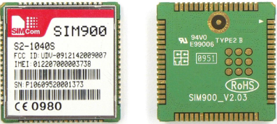

La Raspberry Pi es básicamente una computadora de bajo costo que proporciona un conjunto de pines GPIO que le permiten incorporar y controlar componentes electrónicos para ser usada en proyectos digitales, entre los cuales destacan las aplicaciones de IoT, para este proyecto, la raspberry se encargará de recibir los datos del acelerómetro y procesarlos que luego ser enviados por medio del módulo GPRS.

Con el fin de tener conexión a internet constante en el sistema, se determinó el uso del Módulo GPRS SIM800 que permite, tras introducirle una tarjeta sim, enviar y recibir llamadas y SMS y conectarse a Internet.
